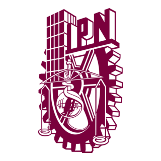

Escuela Superior de Cómputo
Inicio
Oferta Educativa
Ing. Sistemas Computacionales
Ing. En Inteligencia Artificial
Lic. En Ciencia de Datos
Posgrados
M. en C. En Sistemas Computacionales Moviles
M. en C. Y Doctorado En Inteligencia Artificial Y Ciencia de Datos
ESCOMUNIDAD
Bienvenido a la ESCOM